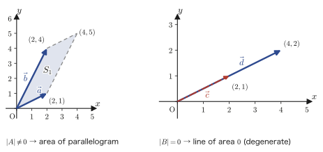
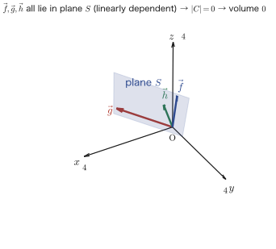

Chapter 8Matrices and Determinants
In the calculus of Chapters 1–7, the leading role was always played by real numbers (or by one or two variables). In Part II, “Linear Algebra,” which begins with this chapter, the leading role passes to the matrix—an array of numbers arranged in a rectangle. A matrix may look like nothing more than a “table of numbers,” but it is a remarkably versatile tool that appears in different guises in almost every branch of science and engineering: systems of linear equations, rotations and scalings of the plane and of space, the analysis of statistical data, states in quantum mechanics, coordinate transformations in computer graphics, and more.
As its starting point, this chapter carefully follows the first eight pages of Yasuhide Mochizuki's “Mathematics Notes: Linear Algebra” (appendix: the transpose, patterns in matrix powers, permutations, the definition of the determinant, cofactors, properties of determinants, and the geometric meaning of the determinant). The central question above all is “What is a determinant, and what is it good for?” At first glance the determinant may look like a “mysterious computational rule such as $ad-bc$.” But by the time you finish this chapter, you should see that the determinant has three faces: (1) it is the criterion for whether a system of linear equations can be solved uniquely (we will use this extensively in the next chapter); (2) it is itself the area of the parallelogram, or the volume of the parallelepiped, formed by vectors; and (3) it is a quantity that arises naturally from the operation of tallying up the signs of permutations, that is, of “rearrangements.”
- A review of the basic operations on matrices (sum, scalar multiple, product), and the definition of the transpose ${}^{t}A$
- The technique of writing a matrix by partitioning it into column vectors, and the patterns in the powers of three kinds of matrices: diagonal, upper triangular, and rotation matrices
- The definition of a permutation, inverse permutations, even and odd permutations, and the sign $\sgn$
- The definition of the determinant (the general definition for determinants of order $n$ as a sum over permutations) and the expansion of the $3\times3$ determinant (its correspondence with Sarrus's rule)
- The definition of the cofactor $A_{ij}$ and cofactor expansion (expansion of a determinant along a row or a column)
- The four basic properties of the determinant (scalar multiplication, interchange of rows, addition of rows, multilinearity) and efficient computation using them
- The geometric meaning of the determinant: the area of a parallelogram in two dimensions and the volume of a parallelepiped in three dimensions
Source notes: Yasuhide Mochizuki, Mathematics Notes: Linear Algebra, pp. 1–8.
8.1 Basic Operations on Matrices and Patterns in Matrix Powers
8.1.1 What is a matrix?—A review of matrix operations
An arrangement of numbers in a rectangle is called a matrix. For example,
$$ A=\begin{bmatrix}1&2&-1\\0&3&2\end{bmatrix} $$is a matrix with two rows (running horizontally) and three columns (running vertically). In general, a matrix with $m$ rows (horizontally) and $n$ columns (vertically) is called a matrix of type $(m,n)$, and the number in the $i$th row and the $j$th column is called the $(i,j)$ entry and written $a_{ij}$ (we call $i$ the row index and $j$ the column index. Here an “index” is a subscript: a small number written at the lower right or upper right of a letter). In the example above, $a_{11}=1$ and $a_{23}=2$. In this book, matrices are denoted by capital letters such as $A,B,C,\ldots$.
Definition 8.1: Matrix
A rectangular arrangement of $m\times n$ numbers $a_{11},a_{12},\ldots,a_{mn}$ with $m$ rows (horizontal) and $n$ columns (vertical)
$$ A=\begin{bmatrix}a_{11}&a_{12}&\cdots&a_{1n}\\a_{21}&a_{22}&\cdots&a_{2n}\\\vdots&\vdots&&\vdots\\a_{m1}&a_{m2}&\cdots&a_{mn}\end{bmatrix} $$is called a matrix of type $(m,n)$. In particular, when $n=1$ (that is, when there is only one column), $A$ is called a column vector, and when $m=1$ (when there is only one row), a row vector. Also, when $m=n$, it is called a square matrix of order $n$.
Calculations with matrices are a straightforward extension of the calculations with numerical vectors that you learned in high school mathematics. For two matrices $A=(a_{ij})$ and $B=(b_{ij})$ of the same type, we define the sum and the scalar multiple as follows.
Definition 8.2: Sum and scalar multiple of matrices
When $A=(a_{ij})$ and $B=(b_{ij})$ are matrices of the same type $(m,n)$ and $\lambda$ is a real number (a scalar), we define
$$ A+B=(a_{ij}+b_{ij}),\qquad \lambda A=(\lambda a_{ij}) $$That is, the sum is formed by adding the entries in the same positions, and the scalar multiple by multiplying every entry by $\lambda$. (The sum of matrices of different types is not defined.)
The real issue is the product. Matrix multiplication does not mean “multiplying the entries in the same positions”; it follows a more intricate rule. Let us first check this with concrete numbers. Take a $2\times3$ matrix $A$ and a $3\times2$ matrix $B$, namely
$$ A=\begin{bmatrix}1&2&-1\\0&3&2\end{bmatrix},\qquad B=\begin{bmatrix}2&0\\1&-1\\3&1\end{bmatrix} $$The $(1,1)$ entry of the product $AB$ is formed from the first row $(1,2,-1)$ of $A$ and the first column $\begin{bmatrix}2\\1\\3\end{bmatrix}$ of $B$ by “multiplying the corresponding entries in order and adding everything up”: $1\times2+2\times1+(-1)\times3=2+2-3=1$. Similarly, the $(1,2)$ entry is obtained from the first row of $A$ and the second column $\begin{bmatrix}0\\-1\\1\end{bmatrix}$ of $B$ as $1\times0+2\times(-1)+(-1)\times1=0-2-1=-3$. The $(2,1)$ entry is obtained from the second row $(0,3,2)$ of $A$ and the first column of $B$ as $0\times2+3\times1+2\times3=9$, and the $(2,2)$ entry from the second row of $A$ and the second column of $B$ as $0\times0+3\times(-1)+2\times1=-1$. Putting these together, we obtain
$$ AB=\begin{bmatrix}1&-3\\9&-1\end{bmatrix} $$This is a $2\times2$ matrix. The next definition generalizes this rule of computing by pairing “a row of $A$” with “a column of $B$.”
Definition 8.3: Matrix product
Let $A=(a_{ij})$ be of type $(m,n)$ and $B=(b_{jk})$ be of type $(n,p)$ (that is, the number of columns of $A$ equals the number of rows of $B$). The product $AB$ is defined to be the matrix of type $(m,p)$
$$ AB=(c_{ik}),\qquad c_{ik}=\sum_{j=1}^{n}a_{ij}b_{jk}=a_{i1}b_{1k}+a_{i2}b_{2k}+\cdots+a_{in}b_{nk} $$That is, the $(i,k)$ entry is obtained from the $i$th row of $A$ and the $k$th column of $B$ by “multiplying the corresponding entries and adding them up.” When the number of columns of $A$ does not equal the number of rows of $B$, the product $AB$ is not defined.
Caution: Matrix multiplication is not commutative
For real numbers, $ab=ba$ always holds, but for matrices we have $AB\neq BA$ in general. In fact, for $A$ (of type $2\times3$) and $B$ (of type $3\times2$) in the example above, $AB$ is of type $2\times2$ but $BA$ is of type $3\times3$, so they do not even have the same type. Even for square matrices of the same type, $AB$ and $BA$ generally do not coincide. When working with matrix products, you must never interchange the order of multiplication at will.
8.1.2 The transpose
Let us consider the operation of interchanging the rows and columns of a matrix.
Definition 8.4: Transpose
The matrix of type $(n,m)$ obtained from a matrix $A=(a_{ij})$ of type $(m,n)$ by interchanging its rows and columns is called the transpose of $A$ and is written ${}^{t}A$. That is, the $(j,i)$ entry of ${}^{t}A$ is the $(i,j)$ entry $a_{ij}$ of $A$. For example, we have
\begin{equation} A=\begin{bmatrix}a_{11}&a_{12}&a_{13}\\a_{21}&a_{22}&a_{23}\\a_{31}&a_{32}&a_{33}\end{bmatrix} \qquad {}^{t}A=\begin{bmatrix}a_{11}&a_{21}&a_{31}\\a_{12}&a_{22}&a_{32}\\a_{13}&a_{23}&a_{33}\end{bmatrix} \label{eq:8-transpose-def} \end{equation}(The first row $(a_{11},a_{12},a_{13})$ of $A$ becomes the first column of ${}^{t}A$, the second row of $A$ becomes the second column of ${}^{t}A$, and so on: each row simply becomes a column.)
For a square matrix, it is easiest to think of the transpose as the operation of “reflecting across the diagonal running from the upper left to the lower right (the diagonal entries, meaning $a_{11},a_{22},a_{33}$).” The entries on the diagonal do not move at all, so their values do not change under transposition. Figure 8.1 shows this.
The transpose has useful properties that we will use repeatedly in later chapters. In particular, transposing the product of two matrices gives the product of their transposes in reverse order. This is not written in the original notes, but since it is a fact used very often when working with matrices, we confirm it here.
Theorem 8.1: Properties of the transpose
(i) ${}^{t}({}^{t}A)=A$ (transposing twice returns the original matrix).
(ii) If $A$ is of type $(m,n)$ and $B$ is of type $(n,p)$, then ${}^{t}(AB)={}^{t}B\,{}^{t}A$ (the transpose of a product equals the product of the transposes taken in reverse order).
Proof
(i) Transposition interchanges rows and columns, so performing it twice returns every entry to its original position. Checking in terms of entries: the $(j,i)$ entry of ${}^{t}A$ is the $(i,j)$ entry $a_{ij}$ of $A$, and the $(i,j)$ entry of ${}^{t}({}^{t}A)$ is the $(j,i)$ entry of ${}^{t}A$, which is again $a_{ij}$. Hence ${}^{t}({}^{t}A)=A$.
(ii) Since $AB$ is of type $(m,p)$, ${}^{t}(AB)$ is of type $(p,m)$. On the other hand, ${}^{t}B$ is of type $(p,n)$ and ${}^{t}A$ is of type $(n,m)$, so ${}^{t}B\,{}^{t}A$ is also of type $(p,m)$, and the types agree. Now we compare entries. By Definition 8.3, the $(i,k)$ entry of $AB$ is $\sum_j a_{ij}b_{jk}$, so the $(k,i)$ entry of ${}^{t}(AB)$ is the same quantity $\sum_j a_{ij}b_{jk}$. On the other hand, the $(k,j)$ entry of ${}^{t}B$ is $b_{jk}$ and the $(j,i)$ entry of ${}^{t}A$ is $a_{ij}$, so applying Definition 8.3 directly, the $(k,i)$ entry of ${}^{t}B\,{}^{t}A$ is $\sum_j b_{jk}a_{ij}=\sum_j a_{ij}b_{jk}$, and the $(k,i)$ entries of the two sides agree. Hence ${}^{t}(AB)={}^{t}B\,{}^{t}A$.
∎
Example 8.1: Checking the transpose of a product ${}^{t}(AB)={}^{t}B\,{}^{t}A$
Let $A=\begin{bmatrix}1&2&-1\\0&3&2\end{bmatrix}$ and $B=\begin{bmatrix}2&0\\1&-1\\3&1\end{bmatrix}$. Compute $AB$, ${}^{t}(AB)$, and ${}^{t}B\,{}^{t}A$ separately, and verify that Theorem 8.1(ii) holds.
Solution. As already computed in Section 8.1.1, $AB=\begin{bmatrix}1&-3\\9&-1\end{bmatrix}$. Hence
$$ {}^{t}(AB)=\begin{bmatrix}1&9\\-3&-1\end{bmatrix} $$Next we compute ${}^{t}B\,{}^{t}A$. Since ${}^{t}B=\begin{bmatrix}2&1&3\\0&-1&1\end{bmatrix}$ (a $2\times3$ matrix) and ${}^{t}A=\begin{bmatrix}1&0\\2&3\\-1&2\end{bmatrix}$ (a $3\times2$ matrix), the product ${}^{t}B\,{}^{t}A$ is a $2\times2$ matrix. The $(1,1)$ entry is obtained from the first row $(2,1,3)$ of ${}^{t}B$ and the first column $(1,2,-1)$ of ${}^{t}A$: $2\times1+1\times2+3\times(-1)=2+2-3=1$. The $(1,2)$ entry is obtained from the first row of ${}^{t}B$ and the second column $(0,3,2)$ of ${}^{t}A$: $2\times0+1\times3+3\times2=0+3+6=9$. The $(2,1)$ entry is obtained from the second row $(0,-1,1)$ of ${}^{t}B$ and the first column of ${}^{t}A$: $0\times1+(-1)\times2+1\times(-1)=-2-1=-3$. The $(2,2)$ entry is obtained from the second row of ${}^{t}B$ and the second column of ${}^{t}A$: $0\times0+(-1)\times3+1\times2=-3+2=-1$. Collecting these, we get
$$ {}^{t}B\,{}^{t}A=\begin{bmatrix}1&9\\-3&-1\end{bmatrix} $$so indeed ${}^{t}(AB)={}^{t}B\,{}^{t}A$ holds. (Verified with SymPy.)
8.1.3 Decomposing into column vectors—a computational technique
When working with matrices, taking the viewpoint of “extracting each column as a vector” can sometimes make a computation easier to follow. Let us consider the difference between the following two expressions. Let the columns of $A=\begin{bmatrix}a_{11}&a_{12}&a_{13}\\a_{21}&a_{22}&a_{23}\\a_{31}&a_{32}&a_{33}\end{bmatrix}$ be the column vectors $\vec{x}_1=\begin{bmatrix}a_{11}\\a_{21}\\a_{31}\end{bmatrix}$, $\vec{x}_2=\begin{bmatrix}a_{12}\\a_{22}\\a_{32}\end{bmatrix}$, $\vec{x}_3=\begin{bmatrix}a_{13}\\a_{23}\\a_{33}\end{bmatrix}$. Then the following two expressions, which we build using the real numbers $\lambda_1,\lambda_2,\lambda_3$, look similar but are entirely different in both meaning and type.
(A note on notation: in this chapter we use the symbols $\vec{x}_1,\vec{x}_2,\vec{x}_3$ with arrows to denote “column vectors, that is, numbers arranged vertically.” In Part II (Linear Algebra), even for the same object, a “column vector,” the symbol used for it may be decorated differently from chapter to chapter—for example, some chapters from Chapter 9 onward use the boldface $\bm{x}$. In every case the object referred to (an element of $\R^n$) is the same, and whenever the notation differs from one chapter to another, we will say so in the text at that point.)
Caution: It is fine to mix vectors in among the entries of a matrix
Three column vectors placed side by side, as in $[\vec{x}_1\ \ \vec{x}_2\ \ \vec{x}_3]$, are nothing other than the $3\times3$ matrix $A$ itself. No contradiction arises if we regard this as arranging “column vectors” in place of “matrix entries.”
Math Note: The difference between $[\lambda_1\vec{x}_1+\lambda_2\vec{x}_2+\lambda_3\vec{x}_3]$ and $[\lambda_1\vec{x}_1\ \ \lambda_2\vec{x}_2\ \ \lambda_3\vec{x}_3]$
The first one, $[\lambda_1\vec{x}_1+\lambda_2\vec{x}_2+\lambda_3\vec{x}_3]$, is obtained by multiplying the three column vectors by $\lambda_1,\lambda_2,\lambda_3$ respectively and then adding them up into a single vector; its type is $(3,1)$ (a single column vector). It equals the product of the matrix $[\vec{x}_1\ \ \vec{x}_2\ \ \vec{x}_3]$ ($=A$ itself), formed by placing the column vectors of $A$ side by side, with the column vector $\begin{bmatrix}\lambda_1\\\lambda_2\\\lambda_3\end{bmatrix}$ multiplied on the right:
\begin{equation} [\lambda_1\vec{x}_1+\lambda_2\vec{x}_2+\lambda_3\vec{x}_3] = [\vec{x}_1\ \ \vec{x}_2\ \ \vec{x}_3]\begin{bmatrix}\lambda_1\\\lambda_2\\\lambda_3\end{bmatrix}=\begin{bmatrix}a_{11}&a_{12}&a_{13}\\a_{21}&a_{22}&a_{23}\\a_{31}&a_{32}&a_{33}\end{bmatrix}\begin{bmatrix}\lambda_1\\\lambda_2\\\lambda_3\end{bmatrix} \label{eq:8-colvec-sum} \end{equation}(Verify that the right-hand side is the matrix product of Definition 8.3. The product $a_{11}\lambda_1+a_{12}\lambda_2+a_{13}\lambda_3$ of the first row $(a_{11},a_{12},a_{13})$ of $A$ and the column vector $(\lambda_1,\lambda_2,\lambda_3)$ is exactly equal to the first component $\lambda_1 a_{11}+\lambda_2a_{12}+\lambda_3a_{13}$ of the vector on the left-hand side.)
The second one, $[\lambda_1\vec{x}_1\ \ \lambda_2\vec{x}_2\ \ \lambda_3\vec{x}_3]$, is obtained by multiplying the three column vectors by $\lambda_1,\lambda_2,\lambda_3$ respectively and leaving them side by side; its type is $(3,3)$ (the same as the original $A$). It equals the product of $A$ with the diagonal matrix $\begin{bmatrix}\lambda_1&0&0\\0&\lambda_2&0\\0&0&\lambda_3\end{bmatrix}$ multiplied on the right:
\begin{equation} [\lambda_1\vec{x}_1\ \ \lambda_2\vec{x}_2\ \ \lambda_3\vec{x}_3] = [\vec{x}_1\ \ \vec{x}_2\ \ \vec{x}_3]\begin{bmatrix}\lambda_1&0&0\\0&\lambda_2&0\\0&0&\lambda_3\end{bmatrix}=\begin{bmatrix}a_{11}&a_{12}&a_{13}\\a_{21}&a_{22}&a_{23}\\a_{31}&a_{32}&a_{33}\end{bmatrix}\begin{bmatrix}\lambda_1&0&0\\0&\lambda_2&0\\0&0&\lambda_3\end{bmatrix} \label{eq:8-colvec-diag} \end{equation}(The first column of the product on the right-hand side is the product of $A$ and the first column $(\lambda_1,0,0)$ of this diagonal matrix, so we get $a_{11}\lambda_1+a_{12}\times0+a_{13}\times0=\lambda_1a_{11}$, …, which agrees exactly with each component of $\lambda_1\vec{x}_1$. The same holds for the second and third columns.)
In this way, if we think of a matrix as partitioned into column vectors, whether we “combine them into a single vector (multiplying by a column vector from the left)” or “keep them side by side (multiplying by a diagonal matrix from the right)” is neatly sorted out as a difference in the shape of the matrix we multiply by. This viewpoint will also be useful in Section 8.1.4, which comes next, where we consider powers of diagonal matrices.
8.1.4 Patterns in matrix powers
For a square matrix $A$, we write $A^2=AA$, $A^3=AAA$, …, and in general $A^n$ for the product of $n$ copies of $A$, the number of copies being a natural number (we set $A^0=E$, the identity matrix; the symbol $E$ for the identity matrix will be used consistently from Chapter 9 onward as well). For a general matrix it is difficult to find a regular form for $A^n$, but for $2\times2$ matrices of special forms, $A^n$ follows a remarkably clean pattern. Here we look at three representative patterns.
Formula 8.1: Powers of a diagonal matrix
If $A=\begin{bmatrix}\alpha&0\\0&\beta\end{bmatrix}$ (a diagonal matrix: a square matrix all of whose entries other than the diagonal entries are $0$), then for any natural number $n$
\begin{equation} A^{n}=\begin{bmatrix}\alpha^{n}&0\\0&\beta^{n}\end{bmatrix} \label{eq:8-diag-power} \end{equation}Derivation: Checking $n=2,3$ and then proving by mathematical induction
First, let us compute concretely for $n=2,3$.
$$ A^{2}=\begin{bmatrix}\alpha&0\\0&\beta\end{bmatrix}\begin{bmatrix}\alpha&0\\0&\beta\end{bmatrix}=\begin{bmatrix}\alpha^2+0&\alpha\cdot0+\beta\cdot0\\\alpha\cdot0+\beta\cdot0&0+\beta^2\end{bmatrix}=\begin{bmatrix}\alpha^{2}&0\\0&\beta^{2}\end{bmatrix} $$ $$ A^{3}=A^{2}\cdot A=\begin{bmatrix}\alpha^2&0\\0&\beta^2\end{bmatrix}\begin{bmatrix}\alpha&0\\0&\beta\end{bmatrix}=\begin{bmatrix}\alpha^3+0&\alpha\cdot0+\beta^2\cdot0\\\alpha^2\cdot0+\beta\cdot0&0+\beta^3\end{bmatrix}=\begin{bmatrix}\alpha^{3}&0\\0&\beta^{3}\end{bmatrix} $$(Note that the off-diagonal entries of the product always take the form $0\times(\text{something})$ and vanish.) Indeed, the pattern holds for $n=2,3$. To prove it for general $n$, we use mathematical induction (a method of proof in which one shows that the statement holds for $n=1$ and that, if it holds for $n=k$, then it also holds for $n=k+1$, and concludes that it holds for all natural numbers $n$). For $n=1$, $A^1=A=\begin{bmatrix}\alpha^1&0\\0&\beta^1\end{bmatrix}$, so the pattern holds. Suppose that for $n=k$ the formula $A^{k}=\begin{bmatrix}\alpha^{k}&0\\0&\beta^{k}\end{bmatrix}$ holds. Then
$$ A^{k+1}=A^{k}A=\begin{bmatrix}\alpha^{k}&0\\0&\beta^{k}\end{bmatrix}\begin{bmatrix}\alpha&0\\0&\beta\end{bmatrix}=\begin{bmatrix}\alpha^{k}\alpha+0\cdot0&\alpha^{k}\cdot0+0\cdot\beta\\0\cdot\alpha+\beta^{k}\cdot0&0\cdot0+\beta^{k}\beta\end{bmatrix}=\begin{bmatrix}\alpha^{k+1}&0\\0&\beta^{k+1}\end{bmatrix} $$This shows that the formula holds for $n=k+1$ as well. Hence Eq. \eqref{eq:8-diag-power} holds for all natural numbers $n$.
∎
Formula 8.2: Powers of an upper triangular matrix
If $A=\begin{bmatrix}1&\alpha\\0&1\end{bmatrix}$ (an upper triangular matrix: a square matrix in which every entry below the diagonal is $0$), then for any natural number $n$
\begin{equation} A^{n}=\begin{bmatrix}1&n\alpha\\0&1\end{bmatrix} \label{eq:8-uppertri-power} \end{equation}Derivation: Checking $n=2,3$ and then proving by mathematical induction
$$ A^{2}=\begin{bmatrix}1&\alpha\\0&1\end{bmatrix}\begin{bmatrix}1&\alpha\\0&1\end{bmatrix}=\begin{bmatrix}1+\alpha\cdot0&\alpha+\alpha\\1\cdot0+1\cdot0&\alpha\cdot0+1\end{bmatrix}=\begin{bmatrix}1&2\alpha\\0&1\end{bmatrix} $$ $$ A^{3}=A^{2}\cdot A=\begin{bmatrix}1&2\alpha\\0&1\end{bmatrix}\begin{bmatrix}1&\alpha\\0&1\end{bmatrix}=\begin{bmatrix}1+2\alpha\cdot0&\alpha+2\alpha\\1\cdot0+0\cdot1&\alpha\cdot0+1\end{bmatrix}=\begin{bmatrix}1&3\alpha\\0&1\end{bmatrix} $$Thus for $n=2,3$ the pattern $A^n=\begin{bmatrix}1&n\alpha\\0&1\end{bmatrix}$ holds. We prove it for general $n$ by mathematical induction. For $n=1$, $A^1=A=\begin{bmatrix}1&\alpha\\0&1\end{bmatrix}=\begin{bmatrix}1&1\times\alpha\\0&1\end{bmatrix}$, so the pattern holds. Suppose that for $n=k$ the formula $A^{k}=\begin{bmatrix}1&k\alpha\\0&1\end{bmatrix}$ holds. Then
$$ A^{k+1}=A^{k}A=\begin{bmatrix}1&k\alpha\\0&1\end{bmatrix}\begin{bmatrix}1&\alpha\\0&1\end{bmatrix}=\begin{bmatrix}1\cdot1+k\alpha\cdot0&1\cdot\alpha+k\alpha\cdot1\\0\cdot1+1\cdot0&0\cdot\alpha+1\cdot1\end{bmatrix}=\begin{bmatrix}1&(k+1)\alpha\\0&1\end{bmatrix} $$This shows that the formula holds for $n=k+1$ as well. Hence Eq. \eqref{eq:8-uppertri-power} holds for all natural numbers $n$.
∎
Formula 8.3: Powers of a rotation matrix
If $A=\begin{bmatrix}\cos\theta&-\sin\theta\\\sin\theta&\cos\theta\end{bmatrix}$ (a rotation matrix: a matrix that rotates a vector in the plane about the origin through the angle $\theta$. It is the same as the rotation formulas that appeared in high school mathematics, in the complex plane and in coordinate geometry), then for any natural number $n$
\begin{equation} A^{n}=\begin{bmatrix}\cos n\theta&-\sin n\theta\\\sin n\theta&\cos n\theta\end{bmatrix} \label{eq:8-rotation-power} \end{equation}That is, repeating a rotation through the angle $\theta$ a total of $n$ times is the same as a single rotation through the angle $n\theta$.
Derivation: Checking $n=2$ with the addition formulas and then proving by mathematical induction
$$ A^{2}=\begin{bmatrix}\cos\theta&-\sin\theta\\\sin\theta&\cos\theta\end{bmatrix}\begin{bmatrix}\cos\theta&-\sin\theta\\\sin\theta&\cos\theta\end{bmatrix}=\begin{bmatrix}\cos^{2}\theta-\sin^{2}\theta&-2\sin\theta\cos\theta\\2\sin\theta\cos\theta&\cos^{2}\theta-\sin^{2}\theta\end{bmatrix} $$Here, the addition formulas that we learned in high school mathematics (High School Mathematics, Chapter 5: Trigonometric Addition Formulas and Related Formulas) give
$$ \cos(\theta+\theta)=\cos^{2}\theta-\sin^{2}\theta,\qquad \sin(\theta+\theta)=2\sin\theta\cos\theta $$so, substituting these, we obtain
$$ A^{2}=\begin{bmatrix}\cos2\theta&-\sin2\theta\\\sin2\theta&\cos2\theta\end{bmatrix} $$This confirms that the pattern indeed holds for $n=2$. We prove it for general $n$ by mathematical induction. For $n=1$, $A^1=A=\begin{bmatrix}\cos\theta&-\sin\theta\\\sin\theta&\cos\theta\end{bmatrix}=\begin{bmatrix}\cos1\theta&-\sin1\theta\\\sin1\theta&\cos1\theta\end{bmatrix}$, so the pattern holds. Suppose that for $n=k$ the formula $A^{k}=\begin{bmatrix}\cos k\theta&-\sin k\theta\\\sin k\theta&\cos k\theta\end{bmatrix}$ holds. Then
$$ A^{k+1}=A^{k}A=\begin{bmatrix}\cos k\theta&-\sin k\theta\\\sin k\theta&\cos k\theta\end{bmatrix}\begin{bmatrix}\cos\theta&-\sin\theta\\\sin\theta&\cos\theta\end{bmatrix}=\begin{bmatrix}\cos k\theta\cos\theta-\sin k\theta\sin\theta&-(\cos k\theta\sin\theta+\sin k\theta\cos\theta)\\\sin k\theta\cos\theta+\cos k\theta\sin\theta&-\sin k\theta\sin\theta+\cos k\theta\cos\theta\end{bmatrix} $$Using the addition formulas $\cos k\theta\cos\theta-\sin k\theta\sin\theta=\cos(k+1)\theta$ and $\sin k\theta\cos\theta+\cos k\theta\sin\theta=\sin(k+1)\theta$ once more, we get
$$ A^{k+1}=\begin{bmatrix}\cos(k+1)\theta&-\sin(k+1)\theta\\\sin(k+1)\theta&\cos(k+1)\theta\end{bmatrix} $$This shows that the formula holds for $n=k+1$ as well. Hence Eq. \eqref{eq:8-rotation-power} holds for all natural numbers $n$.
∎
Example 8.2: Numerical computation of the three power patterns
Find the indicated power of each of the following matrices. (a) $A^{5}$ for $A=\begin{bmatrix}2&0\\0&-1\end{bmatrix}$. (b) $B^{4}$ for $B=\begin{bmatrix}1&3\\0&1\end{bmatrix}$. (c) $C^{4}$ for $C=\begin{bmatrix}\cos\frac{\pi}{6}&-\sin\frac{\pi}{6}\\\sin\frac{\pi}{6}&\cos\frac{\pi}{6}\end{bmatrix}$.
Solution. (a) By Formula 8.1 ($\alpha=2,\beta=-1,n=5$), $A^{5}=\begin{bmatrix}2^{5}&0\\0&(-1)^{5}\end{bmatrix}=\begin{bmatrix}32&0\\0&-1\end{bmatrix}$.
(b) By Formula 8.2 ($\alpha=3,n=4$), $B^{4}=\begin{bmatrix}1&4\times3\\0&1\end{bmatrix}=\begin{bmatrix}1&12\\0&1\end{bmatrix}$.
(c) By Formula 8.3 ($\theta=\frac{\pi}{6},n=4$), $C^{4}$ is the rotation matrix for the angle $4\times\frac{\pi}{6}=\frac{2\pi}{3}$ ($120°$). Since $\cos\frac{2\pi}{3}=-\frac{1}{2}$ and $\sin\frac{2\pi}{3}=\frac{\sqrt{3}}{2}$ (values of trigonometric ratios from high school mathematics), we have
$$ C^{4}=\begin{bmatrix}-\dfrac{1}{2}&-\dfrac{\sqrt{3}}{2}\\[4pt]\dfrac{\sqrt{3}}{2}&-\dfrac{1}{2}\end{bmatrix} $$(All three problems verified with SymPy.)
Intuition: Why can only these three matrices be raised to powers so easily?
It is no accident that the powers of diagonal matrices, upper triangular matrices, and rotation matrices take such clean forms. In fact, many square matrices $A$ can be “remade,” using a suitable matrix $P$, so that $P^{-1}AP$ becomes a diagonal matrix (this is called diagonalization). Once a matrix can be diagonalized, we can use the relation $A^{n}=P(P^{-1}AP)^{n}P^{-1}$ to reduce the problem to the power of a diagonal matrix (Formula 8.1), so the power of any complicated matrix can be found easily. Viewed through complex numbers, a rotation matrix can be handled in a way close to diagonalization, while the upper triangular matrix $\begin{bmatrix}1&\alpha\\0&1\end{bmatrix}$ appears as a special example that cannot be diagonalized (because its diagonal entries coincide). We treat this topic of “diagonalization” in earnest in Chapter 12 (Eigenvalues, Eigenvectors, and Diagonalization of Matrices). There, you should see that the three patterns we saw in this section are in fact all derived from one and the same principle (eigenvalues and eigenvectors).
8.2 Permutations and Their Signs
To define the determinant in the next section (Section 8.3), we need to be ready to handle the operation of “rearranging” mathematically. For example, an operation such as rearranging the three numbers $1,2,3$ into the order $2,3,1$ is called a permutation. In this section we look in turn at the definition of a permutation, the permutation in the reverse direction (the inverse permutation), and the way of assigning a “sign” (plus or minus) to a permutation (even and odd permutations).
8.2.1 Definition of a permutation
Definition 8.5: Permutation
A transformation that associates each natural number from $1$ to $n$ with one of the same natural numbers from $1$ to $n$ in a one-to-one way is called a permutation of degree $n$. A permutation is written in a two-row notation, as follows.
\begin{equation} \begin{pmatrix}1&2&3&4&\cdots&n\\i_{1}&i_{2}&i_{3}&i_{4}&\cdots&i_{n}\end{pmatrix} \label{eq:8-perm-def} \end{equation}In the upper row (the first row) we list $1$ through $n$ in increasing order, and in the lower row (the second row) we write the destination $i_{k}$ that corresponds to the number $k$ in the upper row. That is, this notation means “$1$ corresponds to $i_1$, $2$ corresponds to $i_2$, …, and $n$ corresponds to $i_n$” ($i_1,\ldots,i_n$ is also a rearrangement of $1,\ldots,n$, and the same number never appears twice).
Illustration 8.1: An example of a permutation for $n=2$
For $n=2$, the permutation $\begin{pmatrix}1&2\\2&1\end{pmatrix}$, which is abbreviated as $\begin{pmatrix}1\\2\end{pmatrix}\begin{pmatrix}2\\1\end{pmatrix}$, is the permutation that makes “$1$ correspond to $2$ and $2$ correspond to $1$.”
Let us look at a diagram that represents the correspondence between the upper and lower rows by arrows, for a permutation with somewhat more elements, $n=4$. Figure 8.2 shows the correspondence of the permutation $\begin{pmatrix}1&2&3&4\\3&1&2&4\end{pmatrix}$ (“$1$ corresponds to $3$, $2$ to $1$, $3$ to $2$, and $4$ to $4$”) represented by arrows.
Let us count how many permutations there are for each value of $n$.
When $n=2$, there are $2$ permutations, $\begin{pmatrix}1&2\\1&2\end{pmatrix}$ and $\begin{pmatrix}1&2\\2&1\end{pmatrix}$ ($2!=2\times1=2$ permutations in all).
When $n=3$, there are $6$ permutations, $\begin{pmatrix}1&2&3\\1&2&3\end{pmatrix}$, $\begin{pmatrix}1&2&3\\1&3&2\end{pmatrix}$, $\begin{pmatrix}1&2&3\\2&1&3\end{pmatrix}$, $\begin{pmatrix}1&2&3\\2&3&1\end{pmatrix}$, $\begin{pmatrix}1&2&3\\3&1&2\end{pmatrix}$, and $\begin{pmatrix}1&2&3\\3&2&1\end{pmatrix}$ ($3!=3\times2\times1=6$ permutations in all).
In general, there are $n$ ways to choose the destination of $1$, then $n-1$ ways to choose the destination of $2$ from the remaining $n-1$ numbers, and so on; counting in this way, we find that there are exactly $n!$ (the factorial of $n$, read “$n$ factorial”) permutations of degree $n$. This is exactly the same as the idea of permutations in high school mathematics (the total number of ways to arrange $n$ distinct objects in a row).
8.2.2 Inverse permutations
Definition 8.6: Inverse permutation
For a permutation $\sigma$, the permutation that makes exactly the reverse correspondence to $\sigma$ is called the inverse permutation of $\sigma$. That is, if $\sigma$ is the permutation that “makes $k$ correspond to $i_k$,” then the inverse permutation of $\sigma$ is the one that “makes $i_k$ correspond to $k$.”
As an example, consider the inverse permutation of $\sigma=\begin{pmatrix}1&2&3&4\\3&1&2&4\end{pmatrix}$ ($1$ corresponds to $3$, $2$ to $1$, $3$ to $2$, and $4$ to $4$). If we change “A corresponds to B” into “B corresponds to A,” then $3$ corresponds to $1$, $1$ to $2$, $2$ to $3$, and $4$ to $4$. Hence the inverse permutation of $\sigma$ is $\begin{pmatrix}1&2&3&4\\2&3&1&4\end{pmatrix}$.
The procedure for finding the inverse permutation can be organized into the following two steps.
(i) Exchange the upper and lower rows: $\begin{pmatrix}1&2&3&4\\3&1&2&4\end{pmatrix}\ \longrightarrow\ \begin{pmatrix}3&1&2&4\\1&2&3&4\end{pmatrix}$
(ii) Rearrange the natural numbers in the upper row in increasing order (moving the lower row along with them): $\begin{pmatrix}3&1&2&4\\1&2&3&4\end{pmatrix}\ \longrightarrow\ \begin{pmatrix}1&2&3&4\\2&3&1&4\end{pmatrix}$
Figure 8.3 shows these two steps.
8.2.3 Even and odd permutations
The operation of swapping the correspondences of just two numbers in a permutation is called a transposition. For example, starting from $\begin{pmatrix}1&2&3&4\\1&2&3&4\end{pmatrix}$ (the identity permutation: the permutation in which every number corresponds to itself, so that nothing changes) and repeating the operation of swapping two numbers in the lower row several times, we can produce any permutation.
Definition 8.7: Even and odd permutations
When a permutation can be made from the identity permutation by an even number of transpositions, it is called an even permutation. When it can be made by an odd number of transpositions, it is called an odd permutation. (There are many ways to build the same permutation from transpositions, but it is known that the parity of the number of transpositions does not depend on how it is built.)
As an example, let us determine whether $\begin{pmatrix}1&2&3&4\\3&1&2&4\end{pmatrix}$ is an even or an odd permutation. Starting from the identity permutation $\begin{pmatrix}1&2&3&4\\1&2&3&4\end{pmatrix}$, we bring the numbers in the lower row closer to the target arrangement little by little using transpositions.
First, swapping $3$ and $1$ in the lower row gives $\begin{pmatrix}1&2&3&4\\1&2&3&4\end{pmatrix}\to\begin{pmatrix}1&2&3&4\\3&2&1&4\end{pmatrix}$. Next, swapping $2$ and $1$ in the lower row gives $\begin{pmatrix}1&2&3&4\\3&2&1&4\end{pmatrix}\to\begin{pmatrix}1&2&3&4\\3&1&2&4\end{pmatrix}$. We have now reached the target permutation, and the number of transpositions is $2$ (an even number). Hence $\begin{pmatrix}1&2&3&4\\3&1&2&4\end{pmatrix}$ is an even permutation.
Example 8.3: Finding the inverse of a permutation of degree 5 and determining whether it is even or odd
For the permutation $\sigma=\begin{pmatrix}1&2&3&4&5\\4&1&3&5&2\end{pmatrix}$: (a) Find the inverse permutation $\sigma^{-1}$. (b) Determine whether $\sigma$ is an even permutation or an odd permutation.
Solution. (a) We follow the procedure of Definition 8.6. (i) Exchange the upper and lower rows: $\begin{pmatrix}4&1&3&5&2\\1&2&3&4&5\end{pmatrix}$. (ii) Rearrange the upper row in increasing order ($1,2,3,4,5$), moving the lower row along with it. In the upper row, $1$ was originally in the second column, so the $2$ in the second column of the lower row comes along with it. Similarly, $2$ was originally in the fifth column, so the lower entry is $5$; $3$ stays in the third column, so the lower entry is $3$; $4$ was originally in the first column, so the lower entry is $1$; and $5$ was originally in the fourth column, so the lower entry is $4$. Hence
$$ \sigma^{-1}=\begin{pmatrix}1&2&3&4&5\\2&5&3&1&4\end{pmatrix} $$(Checking the answer: if $\sigma$ sends $1\to4$, then $\sigma^{-1}$ should send $4\to1$. Indeed, in the table for $\sigma^{-1}$ the entry below $4$ in the upper row is $1$, so they agree. Similarly, for $2\to1,3\to3,4\to5,5\to2$ under $\sigma$, we have $1\to2,3\to3,5\to4,2\to5$ under $\sigma^{-1}$, and everything corresponds consistently.)
(b) Instead of building the arrangement $(4,1,3,5,2)$ of the lower row of $\sigma$ from the identity permutation $(1,2,3,4,5)$ by transpositions, we use the method of counting, within the arrangement, the “pairs in which a larger number comes before (to the left of) a smaller number” (whose count is called the number of inversions; it is known that the parity of the number of inversions coincides with the parity of the number of transpositions). Listing all the pairs in $(4,1,3,5,2)$ whose order of size is reversed, regardless of the positions of the two entries, we get $(4,1)$, $(4,3)$, $(4,2)$, $(3,2)$, and $(5,2)$, which is $5$ pairs (for example, $4$ comes before $1,3,2$ yet is larger than all of them, which gives three pairs; $5$ comes before $2$ yet is larger, which gives one pair; and $3$ also comes before $2$ yet is larger, which gives one more pair, for a total of $5$ pairs). The number of inversions is $5$ (an odd number), so $\sigma$ is an odd permutation. (We verified the number of inversions and the sign with SymPy and confirmed that both agree.)
8.3 Definition of the Determinant
8.3.1 The sign $\sgn$ and the symbol Σ
We define a function that assigns to each permutation a “sign,” either plus ($+1$) or minus ($-1$).
Definition 8.8: Sign (signature) of a permutation $\sgn$
For a permutation $\sigma=\begin{pmatrix}1&2&\cdots&n\\i_{1}&i_{2}&\cdots&i_{n}\end{pmatrix}$, we define its sign by
$$ \sgn\sigma=\begin{cases}+1&(\sigma\text{ is an even permutation})\\-1&(\sigma\text{ is an odd permutation})\end{cases} $$Here $\sgn$ is an abbreviation of “signature,” and we call it the “sign.” In the example of Section 8.2.3, $\sgn\begin{pmatrix}1&2&3&4\\3&1&2&4\end{pmatrix}=+1$.
Next, let us also review the symbol $\Sigma$ (sigma, the Greek letter that denotes a sum), which we will use frequently from this section on. The expression $\displaystyle\sum_{k=1}^{n}c_k$ means “add up everything from $c_1$ to $c_n$, letting $k$ run from $1$ to $n$.” In the following Definition 8.9, we omit the index range and simply write $\sum_{\sigma}$ (meaning “sum over all permutations $\sigma$”).
8.3.2 Definition of the determinant
Definition 8.9: Determinant
We define the determinant $|A|$ (also written $\det A$) of a square matrix $A=\begin{bmatrix}a_{11}&a_{12}&\cdots&a_{1n}\\a_{21}&a_{22}&\cdots&a_{2n}\\\vdots&\vdots&&\vdots\\a_{n1}&a_{n2}&\cdots&a_{nn}\end{bmatrix}$ of order $n$ by
\begin{equation} |A|=\sum_{\sigma}\sgn\begin{pmatrix}1&2&3&\cdots&n\\i_{1}&i_{2}&i_{3}&\cdots&i_{n}\end{pmatrix}\,a_{1i_{1}}a_{2i_{2}}a_{3i_{3}}\cdots a_{ni_{n}} \label{eq:8-det-def} \end{equation}Here the sum $\sum_\sigma$ is taken over all permutations $\sigma=\begin{pmatrix}1&2&\cdots&n\\i_1&i_2&\cdots&i_n\end{pmatrix}$ of degree $n$ ($n!$ in all). That is, the determinant is the sum, over every way of choosing (= every permutation), of the product “formed by choosing one entry from each row and one from each column,” where each product is given the sign $\sgn\sigma$.
This definition is also called the Leibniz formula, because it originates with the 17th-century German mathematician Gottfried Wilhelm Leibniz (1646–1716) (in fact, Leibniz himself did not publish it in this form, but he is regarded as one of the first to use the idea of the determinant). The condition “one from each row and each column” corresponds to the ways of placing $n$ chess rooks (or the rook-like hisha pieces of shogi) on an $n\times n$ board so that no two of them share a line of attack (the same row or the same column). Figure 8.5 shows all $3!=6$ placements (= permutations) for $n=3$, together with their signs and the corresponding terms.
Using this definition, let us actually write out the determinant $|A|$ of a general square matrix $A=\begin{bmatrix}a_{11}&a_{12}&a_{13}\\a_{21}&a_{22}&a_{23}\\a_{31}&a_{32}&a_{33}\end{bmatrix}$ of order $3$.
Derivation: Writing out the determinant of order $3$ (Sarrus's rule) from the definition
As we counted in Section 8.2.1, for $n=3$ there are $3!=6$ permutations. If we find $\sgn$ for each of them (each can be checked one at a time by the method of Section 8.2.3), we obtain
$$ |A|=\sum\sgn\begin{pmatrix}1&2&3\\i_1&i_2&i_3\end{pmatrix}a_{1i_1}a_{2i_2}a_{3i_3} $$ \begin{equation} \begin{aligned} &=\underbrace{\sgn\begin{pmatrix}1&2&3\\1&2&3\end{pmatrix}}_{+1}a_{11}a_{22}a_{33}+\underbrace{\sgn\begin{pmatrix}1&2&3\\1&3&2\end{pmatrix}}_{-1}a_{11}a_{23}a_{32}\\ &\quad+\underbrace{\sgn\begin{pmatrix}1&2&3\\2&1&3\end{pmatrix}}_{-1}a_{12}a_{21}a_{33}+\underbrace{\sgn\begin{pmatrix}1&2&3\\2&3&1\end{pmatrix}}_{+1}a_{12}a_{23}a_{31}\\ &\quad+\underbrace{\sgn\begin{pmatrix}1&2&3\\3&1&2\end{pmatrix}}_{+1}a_{13}a_{21}a_{32}+\underbrace{\sgn\begin{pmatrix}1&2&3\\3&2&1\end{pmatrix}}_{-1}a_{13}a_{22}a_{31} \end{aligned} \label{eq:8-det3-leibniz} \end{equation}(Just as we did for $\begin{pmatrix}1&2&3\\3&1&2\end{pmatrix}$ in Section 8.2.3, the sign of each term is found by counting how many transpositions are needed to reach the permutation from the identity permutation. For example, for $\begin{pmatrix}1&2&3\\2&3&1\end{pmatrix}$, the transposition $1\leftrightarrow2$ gives $\begin{pmatrix}1&2&3\\2&1&3\end{pmatrix}$, and then the transposition $1\leftrightarrow3$ (of the 1 and the 3 in the bottom row) reaches $\begin{pmatrix}1&2&3\\2&3&1\end{pmatrix}$; since this takes two transpositions (= an even permutation), $\sgn=+1$.) Substituting all of these signs, we get
\begin{equation} |A| = a_{11}a_{22}a_{33} - a_{11}a_{23}a_{32} - a_{12}a_{21}a_{33} + a_{12}a_{23}a_{31} + a_{13}a_{21}a_{32} - a_{13}a_{22}a_{31} \label{eq:8-det3-sarrus} \end{equation}This is the content of “Sarrus's rule” (a mnemonic for computing a determinant of order $3$: copy two columns to the right, then take sums and differences of the diagonal products), which is also often used in high school mathematics and physics. Definition 8.9 of this chapter is a more general framework that explains Sarrus's rule from its very root, answering “why we are allowed to compute it this way.”
Example 8.4: Computing a determinant of order $3$
Find the determinant $|A|$ of $A=\begin{bmatrix}2&-1&3\\0&4&1\\5&2&-2\end{bmatrix}$ using Eq. \eqref{eq:8-det3-sarrus}.
Solution. Substitute $a_{11}=2,a_{12}=-1,a_{13}=3,a_{21}=0,a_{22}=4,a_{23}=1,a_{31}=5,a_{32}=2,a_{33}=-2$ into Eq. \eqref{eq:8-det3-sarrus}.
$$ \begin{aligned} |A| &= a_{11}a_{22}a_{33} - a_{11}a_{23}a_{32} - a_{12}a_{21}a_{33} + a_{12}a_{23}a_{31} + a_{13}a_{21}a_{32} - a_{13}a_{22}a_{31}\\ &= 2\times4\times(-2) - 2\times1\times2 - (-1)\times0\times(-2) + (-1)\times1\times5 + 3\times0\times2 - 3\times4\times5\\ &= -16 - 4 - 0 - 5 + 0 - 60\\ &= -85 \end{aligned} $$Hence $|A|=-85$. (Verified with SymPy: computing $\det$ directly gives the same $-85$.)
8.4 Cofactors and Expansion of Determinants
The Leibniz formula for determinants in Definition 8.9 clearly defines what a determinant is, but as $n$ grows the number of terms increases explosively to $n!$, so the formula is not suited to actual computation. We therefore introduce a method—cofactor expansion—that reduces a determinant of order $n$ to a combination of smaller determinants of order $(n-1)$.
Definition 8.10: Cofactor
For a square matrix $A=(a_{ij})$ of order $n$, the determinant of the matrix of order $(n-1)$ obtained from $A$ by removing the $i$th row and the $j$th column, multiplied by $(-1)^{i+j}$, is called the $(i,j)$ cofactor of $A$ and is written $A_{ij}$:
\begin{equation} A_{ij}=(-1)^{i+j}\begin{vmatrix}a_{11}&\cdots&\widehat{a_{1j}}&\cdots&a_{1n}\\ \vdots&&\vdots&&\vdots\\ \widehat{a_{i1}}&\cdots&\widehat{a_{ij}}&\cdots&\widehat{a_{in}}\\ \vdots&&\vdots&&\vdots\\ a_{n1}&\cdots&\widehat{a_{nj}}&\cdots&a_{nn}\end{vmatrix} \label{eq:8-cofactor-def} \end{equation}Here $\widehat{\phantom{a}}$ is a symbol meaning that the marked row or column is “removed,” and only the remaining $(n-1)\times(n-1)$ entries, those outside the $i$th row and the $j$th column, appear in the actual determinant. Figure 8.6 illustrates this operation of “removing the $i$th row and the $j$th column.”
To confirm that this definition is correct, let us find the determinant of $A_1=\begin{bmatrix}a_{11}&a_{12}&a_{13}\\a_{21}&a_{22}&a_{23}\\a_{31}&a_{32}&a_{33}\end{bmatrix}$.
Proof: Rewriting a determinant of order $3$ in terms of cofactors
By Eq. \eqref{eq:8-det3-sarrus} (Sarrus's rule),
$$ |A_1| = a_{11}a_{22}a_{33} + a_{12}a_{23}a_{31} + a_{13}a_{21}a_{32} - a_{13}a_{22}a_{31} - a_{12}a_{21}a_{33} - a_{11}a_{23}a_{32} $$(We have only rearranged the order of the terms; these are the same six terms as in Eq. \eqref{eq:8-det3-sarrus}.) Factoring out $a_{11},a_{12},a_{13}$, we obtain
$$ |A_1| = a_{11}(a_{22}a_{33} - a_{23}a_{32}) - a_{12}(a_{23}a_{31} - a_{21}a_{33}) + a_{13}(a_{21}a_{32} - a_{22}a_{31}) $$(Note that the sign of the $a_{12}$ term is negative. We wrote the contents of the parentheses in the order $a_{23}a_{31}-a_{21}a_{33}$ to match the arrangement of the determinant of order $2$ that follows immediately.) Here, the contents of the three parentheses on the right-hand side coincide with the determinants of order $2$ obtained from $A_1$ by removing the first row together with the first, second, and third columns, respectively:
$$ \begin{vmatrix}a_{22}&a_{23}\\a_{32}&a_{33}\end{vmatrix}=a_{22}a_{33}-a_{23}a_{32},\qquad \begin{vmatrix}a_{21}&a_{23}\\a_{31}&a_{33}\end{vmatrix}=a_{21}a_{33}-a_{23}a_{31},\qquad \begin{vmatrix}a_{21}&a_{22}\\a_{31}&a_{32}\end{vmatrix}=a_{21}a_{32}-a_{22}a_{31} $$By Definition 8.10, these give, respectively, $A_{11}=(-1)^{1+1}\begin{vmatrix}a_{22}&a_{23}\\a_{32}&a_{33}\end{vmatrix}$, $A_{12}=(-1)^{1+2}\begin{vmatrix}a_{21}&a_{23}\\a_{31}&a_{33}\end{vmatrix}$, and $A_{13}=(-1)^{1+3}\begin{vmatrix}a_{21}&a_{22}\\a_{31}&a_{32}\end{vmatrix}$. Since $(-1)^{1+1}=1$, $(-1)^{1+2}=-1$, and $(-1)^{1+3}=1$, we get $A_{11}=a_{22}a_{33}-a_{23}a_{32}$, $A_{12}=-(a_{21}a_{33}-a_{23}a_{31})=a_{23}a_{31}-a_{21}a_{33}$, and $A_{13}=a_{21}a_{32}-a_{22}a_{31}$, which coincide exactly with the contents of the three parentheses above. Hence
\begin{equation} |A_1|=a_{11}A_{11}+a_{12}A_{12}+a_{13}A_{13} \label{eq:8-cofactor-row1} \end{equation}holds. That is, $|A_1|$ can be written as the sum of the products of the entries $a_{11},a_{12},a_{13}$ of the first row and the corresponding cofactors $A_{11},A_{12},A_{13}$.
∎
Eq. \eqref{eq:8-cofactor-row1} is the “cofactor expansion along the first row,” but the same holds for any row and any column. The following theorem states this for the general case of order $n$.
Theorem 8.2: Cofactor expansion
The determinant of a square matrix $A=(a_{ij})$ of order $n$ can be expanded, for any row $i$, as
\begin{equation} |A| = a_{i1}A_{i1}+a_{i2}A_{i2}+a_{i3}A_{i3}+\cdots+a_{in}A_{in} \label{eq:8-cofactor-expansion-row} \end{equation}(expansion along the $i$th row). Similarly, for any column $j$, it can be expanded as
\begin{equation} |A| = a_{1j}A_{1j}+a_{2j}A_{2j}+a_{3j}A_{3j}+\cdots+a_{nj}A_{nj} \label{eq:8-cofactor-expansion-col} \end{equation}(expansion along the $j$th column).
Why does it hold for general $n$ as well? (Idea of the proof)
As we saw in the proof above, for $n=3$ we sorted the six terms of Sarrus's rule into three groups according to “which entry of the first row the term contains” (the two terms containing $a_{11}$, the two containing $a_{12}$, and the two containing $a_{13}$), and checked that each group agrees with the corresponding cofactor. The idea is the same for general $n$: if we sort the Leibniz formula of Definition 8.9 (a sum of $n!$ terms) into $n$ groups according to “which column the permutation $\sigma$ assigns to the entry of the $i$th row” (that is, we fix $\sigma(i)=j$), we can show that the sum of each group agrees exactly with $a_{ij}A_{ij}$. We omit the computation of this sorting in this book because the renaming of indices becomes cumbersome, but it is enough to grasp that it merely repeats, patiently and for many more terms, the “factoring out” operation we checked in the case $n=3$.
Example 8.5: Computing a determinant of order $4$ by cofactor expansion
Find the determinant $|M|$ of $M=\begin{bmatrix}1&2&0&-1\\0&1&3&2\\0&0&1&4\\2&-1&0&1\end{bmatrix}$ using cofactor expansion.
Solution. Since the third row, $(0,0,1,4)$, contains two $0$s, we expand along the third row (take $i=3$ in Eq. \eqref{eq:8-cofactor-expansion-row}). The terms with coefficient $0$ need not be computed, so in
$$ |M| = 0\cdot A_{31}+0\cdot A_{32}+1\cdot A_{33}+4\cdot A_{34} $$we only have to compute the terms with nonzero coefficients. $A_{33}$ is the determinant of order $3$ obtained by removing the third row and the third column from $M$, multiplied by $(-1)^{3+3}=1$:
$$ A_{33}=(-1)^{3+3}\begin{vmatrix}1&2&-1\\0&1&2\\2&-1&1\end{vmatrix}=\begin{vmatrix}1&2&-1\\0&1&2\\2&-1&1\end{vmatrix} $$Computing with Sarrus's rule (Eq. \eqref{eq:8-det3-sarrus}), we get $1\times1\times1+2\times2\times2+(-1)\times0\times(-1)-(-1)\times1\times2-2\times0\times1-1\times2\times(-1)=1+8+0+2-0+2=13$. Hence $A_{33}=13$.
$A_{34}$ is the determinant of order $3$ obtained by removing the third row and the fourth column from $M$, multiplied by $(-1)^{3+4}=-1$:
$$ A_{34}=(-1)^{3+4}\begin{vmatrix}1&2&0\\0&1&3\\2&-1&0\end{vmatrix}=-\begin{vmatrix}1&2&0\\0&1&3\\2&-1&0\end{vmatrix} $$Sarrus's rule gives $1\times1\times0+2\times3\times2+0\times0\times(-1)-0\times1\times2-2\times0\times0-1\times3\times(-1)=0+12+0-0-0+3=15$. Hence $A_{34}=-15$.
From the above, we obtain
$$ |M| = 1\times13+4\times(-15)=13-60=-47 $$(We computed $\det$ directly with SymPy and verified that it gives the same $-47$.)
8.5 Properties of Determinants
The determinant has four basic properties that make computations much easier. Here we check them for determinants of order $2$, but, as noted in the margin of the original notes, these properties hold in exactly the same way for columns, and they hold not only for order $2$ but also for determinants of order $n$ (the idea of the proof is the same as for the cofactor expansion in Section 8.4, and it generalizes to the case of order $n$).
Theorem 8.3: Basic properties of determinants
(i) Multiplying one row by $c$ multiplies the determinant by $c$.
\begin{equation} \begin{vmatrix}ca_{11}&ca_{12}\\da_{21}&da_{22}\end{vmatrix}=cd\begin{vmatrix}a_{11}&a_{12}\\a_{21}&a_{22}\end{vmatrix} \label{eq:8-prop-scalar} \end{equation}(ii) Interchanging two rows changes the sign of the determinant.
\begin{equation} \begin{vmatrix}a_{11}&a_{12}\\a_{21}&a_{22}\end{vmatrix}=-\begin{vmatrix}a_{21}&a_{22}\\a_{11}&a_{12}\end{vmatrix} \label{eq:8-prop-swap} \end{equation}(iii) Adding a constant multiple of another row to a row does not change the determinant.
\begin{equation} \begin{vmatrix}a_{11}&a_{12}\\a_{21}&a_{22}\end{vmatrix}=\begin{vmatrix}a_{11}&a_{12}\\a_{21}+ca_{11}&a_{22}+ca_{12}\end{vmatrix} \label{eq:8-prop-addrow} \end{equation}($c$ is an arbitrary real number. The form $a_{21}\pm a_{11}$ written in the original notes is the special case $c=\pm1$.)
(iv) If a row is split into the sum of two vectors, the determinant also splits into the sum of the two corresponding determinants (multilinearity).
\begin{equation} \begin{vmatrix}a_{11}&a_{12}\\a_{21}+b_{21}&a_{22}+b_{22}\end{vmatrix}=\begin{vmatrix}a_{11}&a_{12}\\a_{21}&a_{22}\end{vmatrix}+\begin{vmatrix}a_{11}&a_{12}\\b_{21}&b_{22}\end{vmatrix} \label{eq:8-prop-additive} \end{equation}Proof (i): Multiplying a row by a scalar
$$ \begin{aligned} \begin{vmatrix}ca_{11}&ca_{12}\\da_{21}&da_{22}\end{vmatrix} &= ca_{11}\cdot da_{22} - ca_{12}\cdot da_{21}\\ &= cd\cdot a_{11}a_{22} - cd\cdot a_{12}a_{21}\qquad(\text{we factored out $c,d$})\\ &= cd(a_{11}a_{22}-a_{12}a_{21})\\ &= cd\begin{vmatrix}a_{11}&a_{12}\\a_{21}&a_{22}\end{vmatrix} \end{aligned} $$∎
Proof (ii): Interchanging two rows
$$ \begin{aligned} \begin{vmatrix}a_{11}&a_{12}\\a_{21}&a_{22}\end{vmatrix} &= a_{11}a_{22} - a_{12}a_{21}\\ &= -(a_{12}a_{21} - a_{11}a_{22})\qquad(\text{we factored out $-1$})\\ &= -\begin{vmatrix}a_{21}&a_{22}\\a_{11}&a_{12}\end{vmatrix} \end{aligned} $$(The last determinant has $a_{21},a_{22}$ in its first row and $a_{11},a_{12}$ in its second row. What we used is that its value, computed from the definition, is $a_{21}a_{12}-a_{22}a_{11}=-(a_{11}a_{22}-a_{12}a_{21})$, which is the value of the original determinant with its sign reversed; that is, it equals $a_{12}a_{21}-a_{11}a_{22}$.)
∎
Proof (iii): Adding a constant multiple of another row leaves the determinant unchanged
We verify this for an arbitrary real number $c$ (the case $c=\pm1$ in the original notes is a special case of this general proof).
$$ \begin{aligned} \begin{vmatrix}a_{11}&a_{12}\\a_{21}+ca_{11}&a_{22}+ca_{12}\end{vmatrix} &= a_{11}(a_{22}+ca_{12}) - a_{12}(a_{21}+ca_{11})\\ &= a_{11}a_{22} + \underline{ca_{11}a_{12}} - \underline{ca_{12}a_{11}} - a_{12}a_{21}\qquad(\text{the underlined terms are the same quantity, so they cancel each other regardless of the value of $c$})\\ &= a_{11}a_{22} - a_{12}a_{21}\\ &= \begin{vmatrix}a_{11}&a_{12}\\a_{21}&a_{22}\end{vmatrix} \end{aligned} $$∎
Proof (iv): Splitting a row into a sum (multilinearity)
We expand the right-hand side first.
$$ \begin{aligned} (\text{right-hand side}) &= (a_{11}a_{22} - a_{12}a_{21}) + (a_{11}b_{22} - a_{12}b_{21})\\ &= a_{11}(a_{22}+b_{22}) - a_{12}(a_{21}+b_{21})\qquad(a_{11},a_{12}\text{ factored out})\\ &= \begin{vmatrix}a_{11}&a_{12}\\a_{21}+b_{21}&a_{22}+b_{22}\end{vmatrix}\qquad(\text{rewritten according to the definition})\\ &= (\text{left-hand side}) \end{aligned} $$∎
If we combine these properties, even a large determinant can be evaluated simply by transforming it into “upper triangular” form (all entries below the diagonal are $0$), in the same way as the elimination method for simultaneous equations in high school mathematics, and then computing the product of the diagonal entries. Indeed, the determinant of an upper triangular matrix equals the product of its diagonal entries—this is a convenient fact to remember, and it can be confirmed from the Leibniz formula for determinants in Definition 8.9: since all the entries in the lower triangular part are $0$, choosing any permutation other than the identity permutation $\sigma=\mathrm{id}$ makes a $0$ appear somewhere in the product $a_{1i_1}\cdots a_{ni_n}$ (one is forced to choose an entry from the lower triangle).
Example 8.6: Efficient computation of a determinant of order $4$ using the properties of rows
For $P=\begin{bmatrix}2&4&2&0\\1&3&1&2\\3&5&4&1\\1&1&2&3\end{bmatrix}$, find the determinant $|P|$ using the properties in Theorem 8.3.
Solution. First, every entry of the first row is even, so we use property (i) to factor out $2$. Letting $R_1$ denote the first row, we have $R_1=(2,4,2,0)=2\times(1,2,1,0)$, so
$$ |P| = 2\begin{vmatrix}1&2&1&0\\1&3&1&2\\3&5&4&1\\1&1&2&3\end{vmatrix} $$Next, we use property (iii) repeatedly to make all the entries of the first column below the first row equal to $0$: $R_2\leftarrow R_2-R_1$, $R_3\leftarrow R_3-3R_1$, $R_4\leftarrow R_4-R_1$ (each of these is an operation of “adding a constant multiple of another row,” so the determinant does not change).
$$ 2\begin{vmatrix}1&2&1&0\\1&3&1&2\\3&5&4&1\\1&1&2&3\end{vmatrix} = 2\begin{vmatrix}1&2&1&0\\0&1&0&2\\0&-1&1&1\\0&-1&1&3\end{vmatrix} $$Continuing, we make the entries of the second column below the second row equal to $0$: $R_3\leftarrow R_3+R_2$, $R_4\leftarrow R_4+R_2$ (the $(2,2)$ entry of the second row is $1$, so we can simply add the row as it is).
$$ 2\begin{vmatrix}1&2&1&0\\0&1&0&2\\0&-1&1&1\\0&-1&1&3\end{vmatrix} = 2\begin{vmatrix}1&2&1&0\\0&1&0&2\\0&0&1&3\\0&0&1&5\end{vmatrix} $$Finally, we make the entry of the third column below the third row equal to $0$: $R_4\leftarrow R_4-R_3$.
$$ 2\begin{vmatrix}1&2&1&0\\0&1&0&2\\0&0&1&3\\0&0&1&5\end{vmatrix} = 2\begin{vmatrix}1&2&1&0\\0&1&0&2\\0&0&1&3\\0&0&0&2\end{vmatrix} $$The operations used so far are only those of property (i) (in reverse, that is, factoring out) and property (iii) (adding a constant multiple of another row); we did not use row interchange (property (ii)), so the sign does not change. The last determinant is that of an upper triangular matrix, so it equals the product of its diagonal entries, $1\times1\times1\times2=2$. Hence we have
$$ |P| = 2\times2 = 4 $$(Verified with SymPy: computing $\det$ directly gives the same value, $4$.)
8.6 Geometric Meaning of the Determinant
So far we have treated the determinant as an algebraic computational rule that uses the signs of permutations. But the determinant has another face—the face of expressing the size of a figure. What does it mean for the determinant to be $0$, and what does it mean for it not to be $0$? Let us check with concrete numerical values and graphs.
8.6.1 Two dimensions: area
Consider the vectors $\vec{a}=\begin{bmatrix}2\\1\end{bmatrix}$ and $\vec{b}=\begin{bmatrix}2\\4\end{bmatrix}$. Arranging $\vec{a}$ and $\vec{b}$ as columns gives the matrix $A=\begin{bmatrix}2&2\\1&4\end{bmatrix}$.

Computing the determinant, we have
\begin{equation} |A| = 2\times4-2\times1 = 8-2 = 6 \qquad\cdots① \label{eq:8-area-detA} \end{equation}On the other hand, let us find the area $S_1$ of the parallelogram formed by $\vec{a},\vec{b}$ (the left panel of Figure 8.7, with vertices at the origin $O$, the tip $(2,1)$ of $\vec{a}$, the tip $(4,5)$ of $\vec{a}+\vec{b}$, and the tip $(2,4)$ of $\vec{b}$) by subtracting the excess parts from the rectangle that encloses these points. The rectangle enclosing the four points, with exactly two of them as opposite corners, has $x$-range $[0,4]$ and $y$-range $[0,5]$, so its area is $4\times5=20$. The “remainder” left when the parallelogram is removed from this rectangle splits into two small right triangles formed by $\vec a=(a_1,a_2)=(2,1)$ (together equal in area to a rectangle of size $a_1\times a_2$), two right triangles formed by $\vec b=(b_1,b_2)=(2,4)$ (together equal in area to a rectangle of size $b_1\times b_2$), and two rectangles of width $b_1$ and height $a_2$ (in general this decomposition holds when $a_1,b_1>0$ and $0\lt a_2\lt b_2$, and algebraically it corresponds to the identity $(a_1+b_1)(a_2+b_2)=(a_1a_2+b_1b_2)+2a_2b_1+(a_1b_2-a_2b_1)$):
\begin{equation} S_1 = 20-(4+10)=6 \qquad\cdots② \label{eq:8-area-S1} \end{equation}Here $10=a_1a_2+b_1b_2=2\times1+2\times4=2+8$ (the two pairs of right triangles) and $4=2a_2b_1=2\times1\times2$ (the two rectangles). Since Eqs. ① and ② agree, we see that $|A|$ gives the area $S_1$ of the parallelogram.
Now consider another pair, $\vec{c}=\begin{bmatrix}2\\1\end{bmatrix}$ and $\vec{d}=\begin{bmatrix}4\\2\end{bmatrix}$. Putting $\vec c$ and $\vec d$ together gives $B=\begin{bmatrix}2&4\\1&2\end{bmatrix}$. The determinant is
$$ |B| = 4-4 = 0 $$As the right panel of Figure 8.7 shows, $\vec d=2\vec c$ (the same direction, only twice the length), so $\vec c,\vec d$ lie on the same line and no parallelogram is formed (it collapses to a line segment). Hence the area is $0$.
From this we can summarize as follows: in the two-dimensional graph, if the determinant is not $0$, it gives the value of the area, and if it is $0$, the two vectors overlap and a line of area $0$ appears. Let us prove this for a general $2\times2$ matrix.
Theorem 8.4: Geometric meaning of the determinant (two dimensions)
Let $A=\begin{bmatrix}a_1&b_1\\a_2&b_2\end{bmatrix}$ be the matrix whose columns are the vectors $\vec a=(a_1,a_2)$ and $\vec b=(b_1,b_2)$. Then the area of the parallelogram formed by $\vec a,\vec b$ is equal to $|A|=|a_1b_2-a_2b_1|$ (absolute value). In particular, $|A|=0$ if and only if $\vec a,\vec b$ lie on the same line (one is a real multiple of the other).
Proof
Let $\alpha,\beta$ be the angles of $\vec a,\vec b$ measured from the origin $O$ (that is, the angles measured from the $x$-axis), and let $r=\|\vec a\|,\ s=\|\vec b\|$ be their lengths, so that we can write $\vec a=(r\cos\alpha,r\sin\alpha)$ and $\vec b=(s\cos\beta,s\sin\beta)$. The area of a parallelogram is given by “base $\times$ height.” If we take $\vec a$ (of length $r$) as the base, the height is the length of the perpendicular dropped from $\vec b$ to the direction of $\vec a$, that is, with $\theta=\beta-\alpha$ the angle between $\vec b$ and $\vec a$, it is $s|\sin\theta|$. Hence the area is
$$ S = rs|\sin\theta| = rs|\sin(\beta-\alpha)| = rs|\sin\beta\cos\alpha-\cos\beta\sin\alpha| $$(we used the addition formula $\sin(\beta-\alpha)=\sin\beta\cos\alpha-\cos\beta\sin\alpha$ from high school mathematics). Now substituting $r\cos\alpha=a_1$, $r\sin\alpha=a_2$, $s\cos\beta=b_1$, and $s\sin\beta=b_2$, we obtain
$$ rs(\sin\beta\cos\alpha-\cos\beta\sin\alpha) = (s\sin\beta)(r\cos\alpha)-(s\cos\beta)(r\sin\alpha) = b_2a_1-b_1a_2 = a_1b_2-a_2b_1 $$and so $S=|a_1b_2-a_2b_1|=|A|$ (with the absolute value taken) has been shown. Moreover, $\vec a,\vec b$ lie on the same line (there is a real number $k$ with $\vec b=k\vec a$, or $\vec a=\vec 0$) if and only if $\theta=0$ or $\pi$ (or one of $\vec a,\vec b$ is $\vec 0$), and this holds if and only if $\sin\theta=0$, that is, $S=0$, that is, $|A|=0$.
∎
Example 8.7: Area of a parallelogram
Find the area of the parallelogram formed by $\vec a=(3,1)$ and $\vec b=(1,4)$.
Solution. By Theorem 8.4, the area is $|a_1b_2-a_2b_1|=|3\times4-1\times1|=|12-1|=11$. (Verified with SymPy.)
8.6.2 Three dimensions: volume
Next we consider three dimensions. Consider the vectors $\vec{f}=\begin{bmatrix}1\\2\\3\end{bmatrix}$, $\vec{g}=\begin{bmatrix}2\\-1\\1\end{bmatrix}$, and $\vec{h}=\begin{bmatrix}1\\1\\2\end{bmatrix}$. In fact, these $\vec f,\vec g,\vec h$ all lie in the same plane $S$—that is, they are linearly dependent (one of them can be written as a sum of real multiples of the other two; the rigorous definition is given in Chapter 10). Indeed, the relation $\vec h=\dfrac{3}{5}\vec f+\dfrac{1}{5}\vec g$ holds. Putting $\vec f,\vec g,\vec h$ together as columns gives $C=\begin{bmatrix}1&2&1\\2&-1&1\\3&1&2\end{bmatrix}$. The determinant is
$$ |C| = -2+6+2+3-8-1 = 0 $$(computed by Sarrus's rule; check this for yourself). Figure 8.8 shows how $\vec f,\vec g,\vec h$ lie in the same plane $S$ (the plane spanned by $\vec f,\vec g$), so that the three vectors from the origin $O$ collapse without forming a parallelepiped.

In the three-dimensional graph, if the determinant is not $0$, it gives the value of the volume of the parallelepiped; if it is $0$, the three vectors fit into a single plane, and a plane of volume $0$ appears. As in the two-dimensional case, let us prove the general case. We use the inner product (also called the dot product, $\vec u\cdot\vec v=u_1v_1+u_2v_2+u_3v_3$) that appears in high school mathematics in the study of vectors (vectors in space).
Theorem 8.5: Geometric meaning of the determinant (three dimensions)
Let $C$ be the matrix whose columns are the vectors $\vec f=(f_1,f_2,f_3)$, $\vec g=(g_1,g_2,g_3)$, and $\vec h=(h_1,h_2,h_3)$. Then the volume of the parallelepiped formed by $\vec f,\vec g,\vec h$ is equal to the absolute value of $|C|$. In particular, $|C|=0$ if and only if $\vec f,\vec g,\vec h$ lie in the same plane (are linearly dependent).
Proof (outline)
The volume of a parallelepiped is the product of the area $S$ of the base (the parallelogram formed by $\vec f,\vec g$) and the height (the magnitude of the component of $\vec h$ perpendicular to the base). It is known that, for vectors in space, there exists a vector $\vec f\times\vec g$ (the cross product) that is perpendicular to both of the vectors $\vec f,\vec g$ and whose length equals the base area $S$ (in components, $\vec f\times\vec g=(f_2g_3-f_3g_2,\ f_3g_1-f_1g_3,\ f_1g_2-f_2g_1)$). Then the volume is the product of $S$ and the length of the orthogonal projection of $\vec h$ onto the direction of $\vec f\times\vec g$; using the inner product, it can be written as $V=|\vec h\cdot(\vec f\times\vec g)|$ (since the length of $\vec f\times\vec g$ already contains $S$, the length of the projection times $S$ is exactly the inner product). So let us compute $\vec h\cdot(\vec f\times\vec g)$ in components:
$$ \vec h\cdot(\vec f\times\vec g) = h_1(f_2g_3-f_3g_2)+h_2(f_3g_1-f_1g_3)+h_3(f_1g_2-f_2g_1) $$On the other hand, performing the cofactor expansion of $|C|$ (Theorem 8.2) along the third column (the column of $\vec h$), we get
$$ |C| = h_1\begin{vmatrix}f_2&g_2\\f_3&g_3\end{vmatrix}-h_2\begin{vmatrix}f_1&g_1\\f_3&g_3\end{vmatrix}+h_3\begin{vmatrix}f_1&g_1\\f_2&g_2\end{vmatrix} = h_1(f_2g_3-f_3g_2)-h_2(f_1g_3-f_3g_1)+h_3(f_1g_2-f_2g_1) $$and if we rewrite this using $-h_2(f_1g_3-f_3g_1)=h_2(f_3g_1-f_1g_3)$, it is exactly the same as the above expression for $\vec h\cdot(\vec f\times\vec g)$. Hence $V=|\vec h\cdot(\vec f\times\vec g)|=|C|$. Also, $\vec f,\vec g,\vec h$ lie in the same plane (are linearly dependent) if and only if the height is $0$, that is, $V=0$, that is, $|C|=0$.
∎
Example 8.8: Volume of a parallelepiped and testing for linear dependence
Determine whether $\vec u=(1,2,0)$, $\vec v=(0,1,3)$, and $\vec w=(2,0,1)$ are linearly dependent. Also, find the volume of the parallelepiped they form.
Solution. Compute the determinant whose columns are $\vec u,\vec v,\vec w$.
$$ \begin{vmatrix}1&0&2\\2&1&0\\0&3&1\end{vmatrix} = 1\times(1\times1-0\times3)-0\times(2\times1-0\times0)+2\times(2\times3-1\times0) = 1-0+12=13 $$Since $|{\,}|=13\neq0$, by Theorem 8.5 the vectors $\vec u,\vec v,\vec w$ are not linearly dependent (they are linearly independent). Also, the volume of the parallelepiped they form is $|13|=13$. (Verified with SymPy.)
8.7 Summary and Exercises
8.7.1 Summary
- We reviewed matrix addition, scalar multiplication, and multiplication (Definitions 8.2 and 8.3). Matrix multiplication does not satisfy the commutative law ($AB\neq BA$).
- The transpose ${}^{t}A$ (Definition 8.4) is obtained by interchanging rows and columns; ${}^{t}({}^{t}A)=A$ and ${}^{t}(AB)={}^{t}B\,{}^{t}A$ (Theorem 8.1; the transpose of a product reverses the order).
- For the three kinds of matrices—diagonal, upper triangular, and rotation—the powers can be obtained in neat forms (Formulas 8.1–8.3) by mathematical induction. The reason will become clear through diagonalization in Chapter 12.
- A permutation (Definition 8.5) is a rearrangement of $1,\ldots,n$, and there are $n!$ of them in all. The inverse permutation (Definition 8.6) is obtained by exchanging the upper and lower rows and rearranging so that the upper row is in increasing order. Even and odd permutations (Definition 8.7) are determined by the parity of the number of transpositions needed to reach the permutation from the identity permutation, and the sign $\sgn$ (Definition 8.8) is $+1$ for an even permutation and $-1$ for an odd permutation.
- The determinant (Definition 8.9) is the sum of the signed products over all ways of choosing one entry from each row and each column (that is, over all permutations); this is the Leibniz formula for determinants. In the case of order $3$, it coincides with Sarrus's rule (Eq. \eqref{eq:8-det3-sarrus}).
- Using the cofactor $A_{ij}$ (Definition 8.10), the determinant can be computed by cofactor expansion (Theorem 8.2) along any row or any column we like.
- Using the basic properties of determinants (Theorem 8.3)—(i) scalar multiplication of a row, (ii) sign reversal when two rows are interchanged, (iii) invariance when a constant multiple of another row is added, (iv) multilinearity—we can compute even large determinants efficiently, simply by reducing the matrix to upper triangular form and taking the product of the diagonal entries.
- Geometric meaning of the determinant (Theorems 8.4 and 8.5): in two dimensions it equals the area of the parallelogram formed by two vectors, and in three dimensions it equals the volume of the parallelepiped formed by three vectors. That the determinant is $0$ means that the vectors are “squashed” and the dimension drops (that is, they become linearly dependent).
Example 8.9: Summary review of matrix properties—transpose, determinant, cofactor expansion, geometric meaning
For $A=\begin{bmatrix}1&2&-1\\0&3&2\\1&0&4\end{bmatrix}$: (a) Find the transpose ${}^{t}A$. (b) Use Sarrus's rule (Eq. \eqref{eq:8-det3-sarrus}) to find the determinant $|A|$. (c) Compute $|A|$ by cofactor expansion along the first row (Theorem 8.2, Eq. \eqref{eq:8-cofactor-expansion-row}) and verify that it agrees with the value in (b). (d) Find the volume of the parallelepiped formed by the three column vectors of $A$, and determine whether these three vectors are linearly dependent or linearly independent.
Solution. (a) By Definition 8.4 (interchange rows and columns),
$$ {}^{t}A=\begin{bmatrix}1&0&1\\2&3&0\\-1&2&4\end{bmatrix} $$(the first row $(1,2,-1)$ of $A$ becomes the first column of ${}^{t}A$, the second row $(0,3,2)$ becomes the second column, and the third row $(1,0,4)$ becomes the third column).
(b) We substitute $a_{11}=1,a_{12}=2,a_{13}=-1,a_{21}=0,a_{22}=3,a_{23}=2,a_{31}=1,a_{32}=0,a_{33}=4$ into Eq. \eqref{eq:8-det3-sarrus}.
$$ \begin{aligned} |A| &= a_{11}a_{22}a_{33} - a_{11}a_{23}a_{32} - a_{12}a_{21}a_{33} + a_{12}a_{23}a_{31} + a_{13}a_{21}a_{32} - a_{13}a_{22}a_{31}\\ &= 1\times3\times4 - 1\times2\times0 - 2\times0\times4 + 2\times2\times1 + (-1)\times0\times0 - (-1)\times3\times1\\ &= 12-0-0+4+0+3\\ &= 19 \end{aligned} $$Hence $|A|=19$.
(c) We expand along the first row $(1,2,-1)$. $A_{11}$ is the determinant with the first row and first column removed, multiplied by $(-1)^{1+1}=1$; $A_{12}$ is the determinant with the first row and second column removed, multiplied by $(-1)^{1+2}=-1$; and $A_{13}$ is the determinant with the first row and third column removed, multiplied by $(-1)^{1+3}=1$ (Definition 8.10).
$$ A_{11}=(-1)^{1+1}\begin{vmatrix}3&2\\0&4\end{vmatrix}=3\times4-2\times0=12,\qquad A_{12}=(-1)^{1+2}\begin{vmatrix}0&2\\1&4\end{vmatrix}=-(0\times4-2\times1)=2,\qquad A_{13}=(-1)^{1+3}\begin{vmatrix}0&3\\1&0\end{vmatrix}=0\times0-3\times1=-3 $$Therefore,
$$ |A| = a_{11}A_{11}+a_{12}A_{12}+a_{13}A_{13} = 1\times12+2\times2+(-1)\times(-3) = 12+4+3 = 19 $$which indeed agrees with the value $19$ found in (b).
(d) The volume of the parallelepiped formed by the three column vectors of $A$, namely $\vec{x}_1=(1,0,1)$, $\vec{x}_2=(2,3,0)$, and $\vec{x}_3=(-1,2,4)$, equals the absolute value of $|A|$ by Theorem 8.5, so it is $|19|=19$. Since the volume is not $0$, Theorem 8.5 shows that $\vec{x}_1,\vec{x}_2,\vec{x}_3$ are not linearly dependent (they are linearly independent). ((a)–(d) all verified with SymPy.)
8.7.2 Exercises
Exercise 8.1: Properties of the transpose
For $A=\begin{bmatrix}1&-2&3\\0&4&-1\end{bmatrix}$ and $B=\begin{bmatrix}2&1&0\\-3&2&5\end{bmatrix}$, verify that ${}^{t}(A+B)={}^{t}A+{}^{t}B$ holds. Also prove that this equality holds for general matrices $A,B$ of type $(m,n)$.
Hint: The $(i,j)$ entry of $A+B$ (Definition 8.2) is $a_{ij}+b_{ij}$. Transpose it, and then compare it with the sum of the corresponding entries of ${}^{t}A$ and ${}^{t}B$.
Exercise 8.2: Conjecturing and proving a slightly more complicated power pattern
For $M=\begin{bmatrix}2&3\\0&2\end{bmatrix}$, conjecture the pattern of $M^{n}$ ($n$ a natural number) by computing $M^2,M^3$, and prove it by mathematical induction.
Hint: Splitting the matrix as $M=2I+N$ with $N=\begin{bmatrix}0&3\\0&0\end{bmatrix}$ makes the structure clearer. Observe that $N^2=O$ (the zero matrix).
Exercise 8.3: Classifying the permutations for $n=4$ as even or odd
There are $4!=24$ permutations in all for $n=4$. Write all of them out and classify them into even permutations and odd permutations (how many of each are there?).
Hint: Every permutation that can be made from the identity permutation $\begin{pmatrix}1&2&3&4\\1&2&3&4\end{pmatrix}$ by a single transposition (just swapping two numbers in the lower row once) is an odd permutation. One more transposition from there brings you back to an even permutation. Using the method of counting inversions in Section 8.2.3 (Example 8.3), you can determine them reliably one by one.
Exercise 8.4: Computing a determinant of order $4$ by cofactor expansion
For $Q=\begin{bmatrix}3&0&1&2\\1&-1&0&4\\0&2&1&0\\2&1&-1&3\end{bmatrix}$, find the determinant $|Q|$ using cofactor expansion (Theorem 8.2).
Hint: The third row $(0,2,1,0)$ contains two entries equal to $0$, so expanding along the third row reduces the amount of computation.
Exercise 8.5: Efficient computation of a determinant of order $4$ using the properties of rows
For $R=\begin{bmatrix}1&2&1&0\\2&4&0&1\\1&1&2&2\\0&1&1&3\end{bmatrix}$, find the determinant $|R|$ by first reducing it to upper triangular form using the properties in Theorem 8.3 (elementary row operations).
Hint: First perform $R_2\leftarrow R_2-2R_1$ and $R_3\leftarrow R_3-R_1$. After that, there will be a point at which a row interchange (property (ii); note that the sign is reversed) is needed in order to bring a nonzero entry conveniently onto the diagonal.
Exercise 8.6: Testing linear dependence and the geometric meaning of the determinant
Are $\vec p=(1,1,2)$, $\vec q=(2,-1,1)$, $\vec r=(0,3,3)$ linearly dependent? Decide by computing a determinant, and explain your answer in connection with the meaning (volume) in Theorem 8.5.
Hint: If they are linearly dependent, then $\vec r$ should be expressible concretely as a sum of real multiples of the two vectors $\vec p,\vec q$. Recall the correspondence between the determinant being $0$ and the parallelepiped being squashed so that its volume is $0$.
8.7.3 References
- Yasuhide Mochizuki, Mathematics Notes: Linear Algebra (handwritten lecture notes, in Japanese). The source of this chapter.
- Masahiko Saito, Senkei Daisū Nyūmon [Introduction to Linear Algebra], University of Tokyo Press, 1966 (in Japanese).
- Ichiro Satake, Senkei Daisūgaku [Linear Algebra], Shōkabō, 1958 (in Japanese).
Related simulator: Determinant (meaning as area and volume)